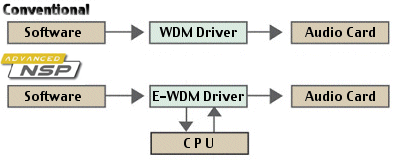
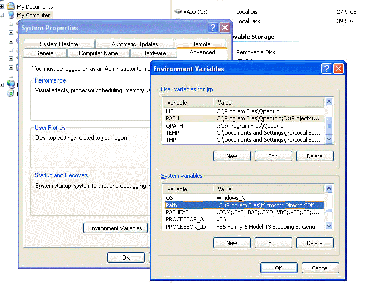
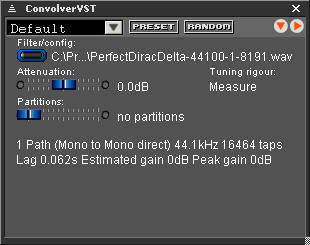

|
| |
VST
VST (Virtual Studio Technology) is a popular format from
Steinberg for loading plug-in effects into
audio sequencers, hard disk recorders, sound editors, and trackers ConvolverVST
is a convolution plug-in for (version 2.4 of) that format.
 Applications
A potentially interesting application of convolverVST would be with the Audiotrak
Prodigy 7.1 sound cards, which can filter the input signal in real time without
a sequencer. (I have not tried this.) This will allow convolution processing
to be applied to sound from any application running on your system. See the
Audiotrak web site for more details.
A similar approach — application of a filter to the sounds generated by any program
installed on your computer — is available through the
SonicStage Mastering Studio Audio Filter feature available with some Sony Vaio
machines.
Limitations
The convolverVST plug-in is under active development. The current version
has the following limitations:
- There is no specific midi support
- There is no offline processing support
- The presets do not include the filter filename (so using multiple versions
of convolverVST may cause confusion)
- The accumulating process mode is not supported. (It just calls the replacing
processing mode.)
The VST standard has evolved over time and is not precisely specified.
Moreover, different hosts have different requirements of their VST and use the interface
in different ways. I would very much welcome feedback
on what works and what doesn't.
For example, I have been able to get the current version of convolverVST to work
with
Getting started
To install convolverVST:
1. download convolver and unzip it and run
Setup.exe.
2. convolverVST requires libsndfile and libfftw DLLs to run. For
many host applications, these must be in the execution path. To add the them
to the execution path, right click on My Computer in Windows Explorer, select
Properties, the Advanced tab, and the Environment Variables
button and append ;C:\Program Files\Convolver\Convolver (or the path to which
you installed Convolver in the first step) to either the User or System Path variable
using the corresponding Edit button:

3. Now start your host and scan for new VST plug-ins using your host application.
(Some host applications require plug-ins to be dragged and dropped on them.)
4. Depending on your host, either at the scanning stage, or when you then
load ConvolverVST, you will get a dialogue box reminding you that no filter has
yet been selected. Depending on your host, this may happen more than once.
5. Now get convolverVST's property page up. How you do so depends
on your host:

- Hit the Filter/config button and select a WAV (or
other supported sound file format) file
- The file will be convolved channel by channel with the source. The
file must have the same number of input and output channels and sample rate
as the source that you are playing back and the number of speakers that you
are using. Raw PCM (.PCM) files are assumed to be single-channel
44.1kHz 32-bit float files. Similarly .DBL files are assumed to be single-channel
44.1kHz 64-bit float files. If you need to specify a different sample
rate with a raw file, use a config file.
- This is not the best approach theoretically for room correction, but is
simple and may give you good sound anyway; or
- a configuration (text) file
- This is more complex, but more flexible approach. There are also some
examples, although they will not be intelligible
without looking at the config file instructions first.
- The links page has some pointers to sources of
impulse responses that you can try, just to get going. See
duffroomcorrection if you want
to record your own room impulse responses.
6. The input channels are also scaled by 10 Atten'n / 20.
So negative values will help to to prevent clipping and positive ones will result
in amplification. If you hear no playback, try raising this value. The negative
of the Estimated gain value shown in the filter description provides a good
starting point. The (negative of the) Peak gain value will guarantee that
there will be no overflows, but is extremely conservative. If you push the shift
key while dragging the slider, you will get finer control.
7. The Partititions setting allows you to tune the convolution
algorithm to your cpu (and the size of its cache). Try values such as 0, 2,
4, 8 or 16. A value of 0 will use straight overlap-save convolution. (A setting
of 1 will effectively do the same, or more precisely overlap-add, but slightly less
efficiently.) Also, the larger the number of partitions, the shorter the lag
between input and output.
8. Convolver tunes itself for a particular filter and number of partitions
when the filter is loaded or the number of partitions changed. The Tuning
rigour setting allows you to specify how much effort the convolution routines
put into tuning themselves to your system:
- Estimate
- specifies that, instead of actual measurements of different algorithms,
a simple heuristic is used to pick a (probably sub-optimal) method quickly.
- Measure
- finds an optimized method by actually and measuring the execution time of
candidate methods, so there may be a pause while this happens. Depending on
your machine, this can take some time (often a few seconds). This is a good
default option.
- Patient
- is like Measure, but considers a wider range of algorithms and often
produces a “more optimal” method (especially for large convolutions), but at
the expense of much longer tuning time (minutes).
This option also considers multi-threaded execution, which may be a benefit
for longer filters and multiple processors (or even multi-core and perhaps even
hyperthreading processors).
- Exhaustive
- is like Patient, but considers an even wider range of algorithms,
including many that are unlikely to be fast, to produce the most optimal calculation
method but with a substantially increased tuning time.
- Take 1 minute
- Finds the best method that it can within a minute for each filter path.
The tuning results are retained for reuse in a file called
wisdom.fftw.
9.You are now ready to use convolverVST...
Technical features
- convolverVST is built with version 2.4 of the VST SDK and the CVS version
of VST GUI
- 32- and 64-bit samples are accepted, but internal processing is 32-bit
- Speaker arrangement is supported (kSpeakerArrMono, with each speaker kSpeakerM
(mono))
- VstPinProperties are supported
- Initial delay is set, reflecting the latency of the current filter path
- VstParameterProperties are supported
Troubleshooting
[let me have your tips here]
|